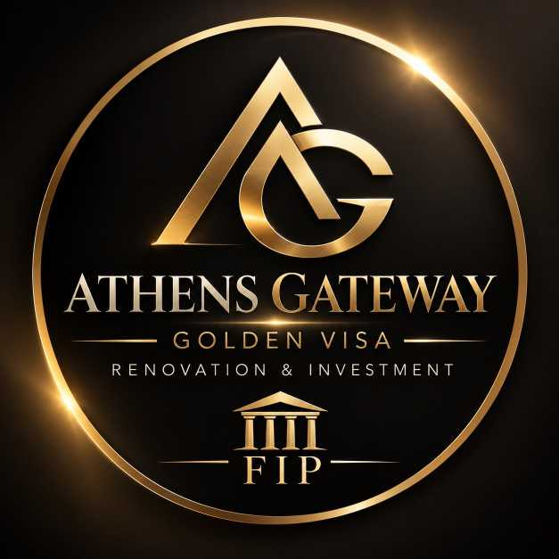
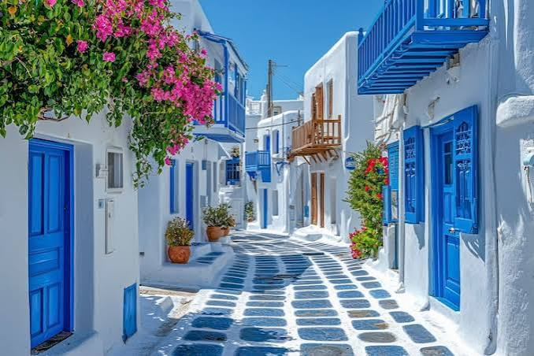
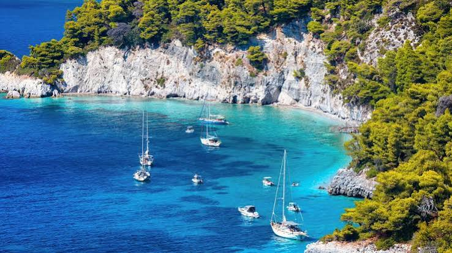

به Athensgateway خوش اومدید. در Athensgateway ما تلاش میکنیم مسیر سرمایهگذاری، خرید و فروش ملک، اخذ اقامت گلدن ویزا و اقامت از طریق تمکن مالی (FIP) را در یونان برای متقاضیان شفاف، مطمئن و ساده کنیم. با بهرهگیری از وکلای متخصص، مهندسین مجرب و مشاوران باتجربه، خدمات خودمون رو از مرحلهی مشاوره اولیه تا انجام مراحل قانونی، انتخاب و خرید ملک، بازسازی و دریافت اقامت ارائه میدیم. اگه قصد سرمایهگذاری در یونان، خرید یا فروش ملک، بازسازی ملک یا دریافت اقامت گلدن ویزا و FIP رو داری، Athensgateway در تمام مراحل کنار تو خواهد بود.
اقامت طلایی یونان (Golden Visa) یکی از سریعترین و مطمئنترین روشهای دریافت اقامت اروپا است. با سرمایهگذاری در املاک یونان، شما و خانوادهتان میتوانید اقامت ۵ ساله قابل تمدید دریافت کنید. تیم ما در آتن، از انتخاب ملک تا ثبتنام و دریافت کارت اقامت، تمام مراحل را برای شما انجام میدهد.
گلدن ویزا یونان یا اقامت طلایی یونان به افراد غیر اروپایی (افرادی با تابعیت کشورهایی به جز اتحادیه اروپا ) اعطا میشود که مبلغ 250000 یورو در املاک و مستغلات یا سایر روشها در یونان سرمایه گذاری کنند. با اخذ ویزای طلایی یونان به سرمایه گذاران و خانواده وی (پدر، مادر، همسر، فرزندان و پدر مادر همسر) اقامت 5 ساله قابل تمدید یونان اعطا میشود. و در صورتی که شخص مالکیت املاک را تا 7 سال حفظ کند. (خانه یا مستغلات فروخته نشود)، میتوان پس از گذراندن ۷ سال در یونان برای شهروندی از طریق naturalization اقدام کنید، به شرطی که هر سال حداقل ۱۸۳ روز در این کشور اقامت داشته باشید. سرمایهگذاران همچنین باید الزامات اضافی را برآورده کنند، از جمله اثبات ادغام در جامعه یونان و گذراندن آزمون زبان. طبق چارچوب مشترک اروپایی مرجع برای زبانها (CEFR)، شما باید در آزمون زبان یونان که بهعنوان آزمون شهروندی یونان شناخته میشود، حداقل سطح B1 را کسب کنید.
مزایای گلدن ویزای یونان گلدن ویزای یونان مزایای زیادی برای متقاضیان و خانوادههای آنها به همراه دارد که اصلیترین آنها شامل موارد زیر است: دسترسی به کشورهای شنگن: یکی از بزرگترین مزایای گلدن ویزای یونان، امکان سفر بدون ویزا به تمام کشورهای حوزه شنگن است. این شامل ۲۷ کشور اروپایی است که به دارندگان ویزای طلایی این فرصت را میدهد تا به راحتی از کشورهای مختلف اروپا بازدید کنند و به راحتی سفرهای تجاری و تفریحی داشته باشند اقامت در یونان: با دریافت گلدن ویزا، متقاضیان و خانوادههای آنها میتوانند به صورت قانونی در یونان اقامت داشته باشند. این به آنها اجازه میدهد که از زیباییهای طبیعی، فرهنگ غنی و سبک زندگی مطلوب این کشور بهره ببرند امکان تحصیل و درمان: دارندگان اقامت طلایی یونان و خانوادههای آنها میتوانند از امکانات آموزشی و بهداشتی یونان بهرهمند شوند. این شامل دسترسی به مدارس و دانشگاههای معتبر و سیستم بهداشتی با کیفیت بوده که برای خانوادههای متقاضیان بسیار جذاب است فرصتهای سرمایهگذاری: با اقامت در یونان، متقاضیان میتوانند از فرصتهای سرمایهگذاری و تجاری در یکی از کشورهای با اقتصاد رو به رشد اروپا بهرهبرداری کنند. یونان به دلیل موقعیت استراتژیک و بازارهای متنوع، فرصتهای سرمایهگذاری زیادی را فراهم میکند پایین بودن هزینههای زندگی: هزینههای زندگی در یونان نسبت به دیگر کشورهای اروپایی پایینتر است. این میتواند به دارندگان ویزای طلایی کمک کند تا از کیفیت زندگی بالاتر با هزینههای معقولتر بهرهمند شوند امکان درخواست تابعیت: پس از ۷ سال اقامت قانونی در یونان، دارندگان گلدن ویزا میتوانند درخواست تابعیت یونان را ارائه دهند ثبات و امنیت: یونان به عنوان یکی از کشورهای عضو اتحادیه اروپا، ثبات سیاسی و اقتصادی را ارائه میدهد. این امر به دارندگان گلدن ویزای یونان این اطمینان را میدهد که در محیطی امن و پایدار زندگی کنند.در صورت همکاری با تیم وکلای حقوقی شرکت ما در کوتاه ترین زمان (3 تا 5ماه) و بدون نیاز به حضور در یونان، اقامت طلایی یونان را میتوانید دریافت کنید.
در ادامه، مراحل دریافت گلدن ویزای یونان بهصورت گامبهگام توضیح داده شده است: ثماس با مشاورین و وکلای ما در ایران به منظور تایید احراز شرایط گلدن ویزا. انتخاب روش سرمایهگذاری در حال حاضر رایجترین روش، خرید ملک در یونان است : اغلب پروندههای ایرانیان، خرید ملک سادهترین و سریعترین مسیر محسوب میشود. دریافت شماره مالیاتی یونان (AFM) : برای انجام هرگونه معامله رسمی در یونان، دریافت شماره مالیاتی الزامی است. این شماره از اداره مالیات یونان صادر میشود و معمولاً از طریق وکیل رسمی انجام میگیرد. مدارک مورد نیاز: • پاسپورت معتبر • وکالتنامه رسمی • فرمهای تکمیلشده مالیاتی .افتتاح حساب بانکی در یونان انتقال سرمایه باید از طریق سیستم بانکی رسمی انجام شود. به همین دلیل افتتاح حساب بانکی در یکی از بانکهای یونان ضروری است. در این مرحله: • منبع پول بررسی میشود (Source of Funds) • مدارک هویتی و مالی ارائه میگردد • انتقال وجه به صورت رسمی ثبت میشود انتخاب ملک و انجام بررسی حقوقی

پس از انتخاب ملک، وکیل شما وضعیت سند، بدهیهای احتمالی، کاربری ملک و مجوزهای ساخت را بررسی میکند. این مرحله اهمیت بالایی دارد، زیرا هرگونه مشکل حقوقی میتواند روند اقامت را مختل کند. موارد بررسی شامل: • وضعیت ثبتی ملک • بدهی مالیاتی • مجوز ساخت و پایان کار • عدم وجود محدودیت حقوقی .امضای قرارداد و انتقال رسمی سرمایه پس از تأیید نهایی، قرارداد خرید در دفتر اسناد رسمی یونان امضا میشود. سرمایه از حساب خریدار به فروشنده منتقل شده و سند رسمی به نام سرمایهگذار ثبت میگردد. در این مرحله: • مالیات انتقال ملک پرداخت میشود • هزینه دفترخانه تسویه میگردد • سند رسمی صادر میشود ثبت درخواست اقامت (Biometrics) پس از تکمیل خرید، پرونده اقامت به اداره مهاجرت یونان ارائه میشود. این مرحله شامل: • ارائه مدارک کامل • ثبت اثر انگشت (بیومتریک) • دریافت رسید اقامت موقت با این رسید، امکان سفر آزادانه در حوزه شینگن وجود دارد. دریافت کارت اقامت ۵ ساله پس از بررسی نهایی پرونده، کارت اقامت گلدن ویزا صادر میشود. این کارت معمولاً ۵ سال اعتبار دارد و تا زمانی که سرمایهگذاری حفظ شود، قابل تمدید است. نکته مهم: برای تمدید گلدن ویزای یونان، شرط حضور حداقلی در کشور وجود ندارد؛ تنها شرط اصلی حفظ سرمایهگذاری است. مدت زمان دریافت گلدن ویزای یونان چقدر است؟ به طور میانگین: • آمادهسازی و خرید ملک: ۱ تا ۳ ماه • بررسی پرونده و صدور کارت: ۳ تا ۶ ماه در مجموع، فرآیند کامل بین ۴ تا ۸ ماه زمان میبرد. هزینههای جانبی دریافت گلدن ویزای یونان (مالیات، بیمه، وکیل و…) این هزینهها علاوه بر مبلغ خرید املاک، میتوانند به شکلهای مختلف شامل مالیات مالیات، بیمه، هزینههای وکیل و سایر هزینههای اداری باشند. در اینجا به برخی از مهمترین هزینههای جانبی پرداختهایم: مالیات خرید ملک: هنگام خرید ملک در یونان، خریداران باید مالیات خرید املاک (فرایند ثبت انتقال مالکیت) را پرداخت کنند. این مالیات معمولاً حدود ۷٪ از قیمت خرید ملک است. علاوه بر مالیات خرید، ممکن است مالیاتهای اضافی مانند مالیات بر املاک سالانه (IMT) نیز وجود داشته باشد که به میزان ارزش ملک بستگی دارد. هزینههای بیمه درمانی: متقاضیان گلدن ویزا و اعضای خانواده آنها باید بیمه درمانی معتبر برای اقامت در یونان داشته باشند. هزینه بیمههای درمانی خصوصی بستگی به نوع پوشش، سن و وضعیت بهداشتی متقاضی دارد. هزینه بیمه درمانی بهطور معمول سالانه محاسبه میشود و برای هر فرد باید بهصورت جداگانه انجام شود. هزینههای وکیل و مشاور مهاجرت: در فرایند دریافت گلدن ویزا، خدمات مشاورهای و حقوقی از وکلا و مشاوران متخصص در این زمینه الزامی است. این هزینهها بسته به خدمات و پیچیدگی پرونده متفاوت است. هزینه خدمات وکیل ممکن است بین 2٬000 یورو تا 10٬000 یورو باشد، بسته به میزان کمک مورد نیاز در فرآیند درخواست ویزا. هزینههای اداری و اسناد رسمی: در فرایند دریافت گلدن ویزا، هزینههایی برای ترجمه اسناد، هزینههای ثبت نام و تاییدیههای لازم نیز وجود دارد. این هزینهها معمولا بسته به تعداد اسناد و نیاز به ترجمه و تایید توسط مقامات یونانی متفاوت است. هزینههای جانبی برای تایید مدارک، گواهیهای رسمی و سایر اسناد مورد نیاز نیز میتواند به طور متوسط از 500 تا 1٬500 یورو باشد. هزینههای تمدید و صدور ویزا: پس از صدور گلدن ویزا، متقاضیان باید هزینههای مربوط به تمدید اقامت را در نظر داشته باشند. تمدید این ویزا هر ۵ سال یکبار نیاز به هزینههای اضافی دارد، از جمله هزینههای ثبت درخواست و بررسی مدارک. با در نظر گرفتن این هزینههای جانبی، متقاضیان باید بودجه کافی برای پردازش تمامی مراحل دریافت گلدن ویزا و اقامت در یونان داشته باشند. توصیه میشود قبل از اقدام، با مشاوران حقوقی و مالی متخصص مشورت کنید تا از تمام هزینهها و الزامات قانونی آگاه شوید. شرایط تمدید گلدن ویزای یونان برای تمدید گلدن ویزای یونان، متقاضیان باید چندین شرط اصلی را رعایت کنند که شامل حفظ و استمرار سرمایهگذاری اولیه است. یکی از الزامات اصلی این است که سرمایهگذاری اصلی که به عنوان شرط دریافت ویزا تعیین شده بود، باید همچنان فعال و معتبر باقی بماند. به عبارت دیگر، اگر متقاضی در املاک و مستغلات سرمایهگذاری کرده است، باید ملک یا املاک خریداری شده در اختیار او باقی بماند و تغییرات عمدهای در وضعیت سرمایهگذاری ایجاد نشده باشد. همچنین، مدارک مربوط به سرمایهگذاری و اثبات آن باید بهروزرسانی و ارائه شود. علاوه بر حفظ سرمایهگذاری، متقاضیان باید مدارک و مستندات لازم را برای درخواست تمدید ارائه دهند. این مدارک شامل گواهیهای مالیاتی، اسناد بیمه درمانی معتبر و تأییدیههای جدید مربوط به وضعیت اقامت و عدم تغییرات در وضعیت کیفری است. همچنین، باید اثبات شود که متقاضی و خانوادهاش همچنان به قوانین و مقررات یونان پایبند هستند و به تعهدات قانونی خود در طول مدت اقامت عمل کردهاند. معمولاً برای تمدید، متقاضیان باید درخواست خود را چند ماه قبل از پایان اعتبار ویزا ارائه دهند تا از تأخیر و مشکلات احتمالی جلوگیری شود. اقامت تمکن مالی یونان: اقامت تمکن مالی یونان، که به «ویزای خود حمایتی یونان» هم شناخته شده است، یکی از سادهترین و مطمئنترین روشهای مهاجرت به اروپا است که نه به سرمایهگذاری هنگفتی نیاز دارد، و نه مدارک تحصیلی و شغلی در رشته مشخص یا مدرک زبان خاصی نیاز دارد. اگر از درآمد ثابت یا پسانداز قابلتوجهی برخوردار هستید، میتوانید بدون نیاز به سرمایهگذاری سنگین یا راهاندازی کسبوکار، اقامت یونان را برای خود و اعضای خانواده دریافت کنید. برای دریافت ویزای تمکن مالی یونان کافیست توانایی مالی خود را از طریق موجودی حساب بانکی یا درآمد ماهیانه معتبر اثبات کنید تا مسیر زندگی در یکی از زیباترین و تاریخیترین کشورهای اروپایی پیش روی شما قرار گیرد. ویزای تمکن مالی یونان برای افرادی که میتوانند اثبات کنند درآمدی ثابت دارند که توانایی پوشش هزینههای زندگی در یونان را دارد، یک فرصت ارزشمند برای شروع زندگی در قلب اروپا محسوب میشود و گزینهای ایدهآل برای دستیابی به اقامت اروپا و اقامت شنگن است. اقامت تمکن مالی یونان از نوع I.8 در مرحله اول برای ۳ سال صادر میشود و در صورت حفظ شرایط، هر بار برای یک دوره ۳ ساله دیگر قابل تمدید است. با دریافت ویزای تایپ D شینگن + افتتاح حساب در یونان برای دریافت اقامت تمکن مالی یونان (موسوم به I.8) وارد این کشور زیبا خواهید شد و حساب بانکی افتتاح خواهید کرد. یکی از جذابترین مزایای اقامت یونان از طریق تمکن مالی، مربوط به مالیات نداشتن موجودی حساب بانکی شماست. در عین حال، ارائه مستمر تمکن مالی یونان و اثبات توانایی مالی در زمان تمدید اقامت یونان، هم مسیر را برای دریافت اقامت دائم اروپا هموار میکند، هم شرایط را برای دریافت پاسپورت یونان تسهیل میکند.
شرایط اقامت تمکن مالی یونان برای دریافت اقامت یونان از طریق تمکن مالی در سال ۲۰۲۶، متقاضیان باید واجد شرایط مشخص و تعریفشدهای باشند. این نوع اقامت که بر پایه توانایی مالی فرد صادر میشود، نیازمند ارائه مدارک و مستنداتیست که توانایی تامین هزینههای زندگی در یونان بدون نیاز به کار یا درآمد محلی را اثبات کند. بهطور کلی، شرایط دریافت ویزای تمکن مالی یونان شامل موارد زیر است: 1. تمکن مالی متقاضی برای درخواست اقامت از طریق تمکن مالی در یونان باید توانایی مالی خود را اثبات کند. این به معنای داشتن موجودی کافی در حساب بانکی یا درآمد ثابت غیر وابسته به شغل متقاضی است که برای تامین هزینههای زندگی در یونان کافی باشد. طبق قوانین جدید، حداقل مبلغ موجودی حساب برای متقاضی اصلی ۳۰,۰۰۰ یورو است.و به ازای هر همراه، مبلغ بیشتری به این مبلغ اضافه شود (برای همسر ۱۵,۰۰۰ یورو و برای هر فرزند ۷-۸ هزار یورو) 2. درآمد مناسب با توجه به اینکه ویزای تمکن مالی یونان مجوز کار در این کشور را ندارد، متقاضی باید نشان دهد که بدون نیاز به کار کردن در این کشور درآمد ماهیانه کافی برای زندگی در یونان را دارد. این درآمد میتواند از منابع مختلفی مانند سود سپردههای بانکی، اجاره ملک یا حقوق بازنشستگی تامین شود. مبلغ مورد نیاز برای متقاضی اصلی حدود ۳۵۰۰ یورو در ماه است.همچنین باید ثابت کند که ۳۵۰۰ یورو درآمد ماهیانه از منابعی خارج از يونان دارد و برای همراهان، درآمد باید به ازای همسر ۵۰٪ و برای هر فرزند ۱۵٪ بیشتر باشد.3. شرط حضور
برای دریافت اقامت تمکن مالی یونان متقاضیان باید حداقل 183 روز (معادل شش ماه و یک روز) در سال را در یونان حضور داشته باشند. این مدتزمان بهعنوان حداقل حضور فیزیکی برای حفظ اعتبار اقامت در نظر گرفته میشود. رعایت نکردن این شرط منجر به لغو اقامت و از دست دادن مزایای آن میشود. در ضمن، توصیه میکنیم که تاریخهای ورود و خروج خود را ثبت و نگهداری کنید تا در صورت نیاز به اثبات حضور شما در یونان امکانپذیر و در دسترس باشد. برای سفر کوتاهمدت یا ورود اولیه به یونان قبل از اقدام برای اقامت تمکن مالی، متقاضیان میتوانند از ویزای توریستی یونان استفاده کنند.
4. شرط سنی
برای درخواست اقامت تمکن مالی یونان هیچ محدودیت سنی خاصی وجود ندارد. افراد در هر سنی میتوانند برای دریافت این نوع ویزا برای اقامت اروپا اقدام کنند؛ البته افراد بالای ۱۸ سال!
5. داشتن بیمه سلامت
داشتن بیمه درمانی معتبر یکی دیگر از شرایط اقامت تمکن مالی یونان محسوب میشود. این بیمه باید هزینههای درمانی احتمالی را در یونان پوشش دهد و متقاضی باید اثبات کند که از پوشش بیمهای کامل برخوردار است. بیمه سلامت معتبر را میتوان از یک شرکت بیمه خصوصی یا از سیستم عمومی بیمه درمانی یونان دریافت کرد.
6. داشتن مدارک اقامتی
متقاضی باید مدارکی را که نشاندهنده اقامت قانونی در یونان است، ارائه دهد. این مدارک میتواند شامل اجارهنامه یا سند مالکیت ملکی باشد که اثبات کند متقاضی در یونان سکونت دارد و بهطور دائم در این کشور حضور خواهد داشت.
7. شرایط همراهان متقاضی
در فرآیند درخواست اقامت تمکن مالی یونان متقاضیان میتوانند اعضای خانواده خود را بهعنوان همراه با خود همراه کنند؛ طبق قوانین مهاجرتی یونان، این افراد شامل همسر و فرزندان زیر ۱۸ سال هستند. برای پذیرش اعضای خانواده بهعنوان همراه، متقاضی باید توانایی مالی کافی برای تامین هزینههای زندگی این افراد را نیز داشته باشد. متقاضی دریافت اقامت یونان برای همراهی همسر باید اثبات کند که رابطه قانونی ازدواج بین دو نفر وجود دارد و همسر بهعنوان بخشی از خانواده اصلی در نظر گرفته میشود.
: اثبات تمکن مالی کافی برای زندگی در یونان برای اثبات تمکن مالی کافی برای دریافت اقامت تمکن مالی باید مدارکی را ارائه دهید که نشاندهنده توانایی شما در تامین هزینههای زندگی در این کشور است. مدارک اثبات داشتن شرایط تمکن مالی یونان عبارت است از: 1. پرینت حساب بانکی پرینت حساب بانکی ۳ تا ۶ ماه اخیر که نشان دهد شما حداقل مبلغ 30هزار یورو برای متقاضی اصلی15000 یورو برای همسر و 7500 یوروبرای هر فرزند در حساب خود دارید. حساب باید در یک بانک معتبر بینالمللی یا یک بانک داخلی مورد تایید باشد. موجودی حساب نباید بهصورت ناگهانی واریز شود؛ بلکه روند تراکنشهای مالی باید نشاندهنده جریان مالی پایدار باشد. 2. مدارک درآمد ماهیانه ثابت شما باید مدارکی را ارائه دهید که نشان دهد حداقل 3500 یورو در ماه درآمد غیر شغلی دارید. قوانین جدید اقامت تمکن مالی یونان: طبق قوانین جدید سفارت یونان، حداقل درآمد ماهانه موردنیاز برای متقاضی اصلی 3500 یورو تعیین شده است. در ضمن، برای همسر متقاضی، این مبلغ با افزایش ۲۰ درصد (700 یورو) و برای هر فرزند زیر ۱۸ سال با افزایش ۱۵ درصد (525 یورو) همراه است. منابع مورد قبول درآمد ثابت ماهیانه برای دریافت اقامت اروپا شامل موارد زیر میشود: • سود سپردههای بانکی (نامه رسمی بانک با تایید سود سالانه) • اجاره املاک و مستغلات (قرارداد اجاره به همراه مدارک واریز ماهیانه) • سود سهام و سرمایهگذاریها (مدارک شرکت یا گواهی سهام) • حقوق بازنشستگی (مدارک رسمی از سازمان بازنشستگی) • درآمد حاصل از حق امتیاز (Royalties) مثل فروش کتاب یا نرمافزار مدارک باید در دارالترجمههای رسمی به زبان یونانی ترجمه و در وزارت دادگستری و امور خارجه ایران نیز تایید شود. با ارائه این مدارک میتوانید ثابت کنید که توانایی مالی کافی برای زندگی در یونان را دارید و بدون نیاز به کار در این کشور برای اقامت در یونان هزینههای خود و خانوادهتان را تامین میکنید. با اینکه کشور یونان یکی از کشورهای حوزه شنگن و اتحادیه اروپا محسوب میشود، بعد مسافتی چندانی از ایران ندارد؛ اما در صورت تمایل به خرید ملک و سرمایهگذاری در یک کشور نزدیک، خرید ملک امارات را به شما پیشنهاد میکنیم. مدارک مورد نیاز اخذ اقامت یونان فرآیند درخواست اقامت یونان از طریق تمکن مالی نیز به مدارک مشخصی نیاز دارد که باید تحویل سفارت این کشور داده شود. لازم به ذکر است که تمامی مدارک باید به زبان یونانی یا انگلیسی ترجمه و در وزارت دادگستری و امور خارجه ایران تایید شوند. مدارک لازم برای اخذ اقامت یونان به ترتیب زیر است:1. پاسپورت متقاضی و همراهان
2. ارائه مدارک هویتی متقاضی و همراهان
3. عکس پاسپورتی متقاضی و همراهان
4. گواهی عدم سوء پیشینه
5. گواهی سلامت پزشکی متقاضی و همراهان (که مورد تایید سفارت یونان باشد)
6. پرداخت تمامی هزینه های مربوط به درخواست ویزا
7. پرینت حساب بانکی با موجودی کافی به نام فرد متقاضی
8. اجاره نامه ملک در یونان
9. ارائه مدارک لازم جهت اثبات درآمد در ایران
10. گواهی اشتغال به کار و یا بازنشستگی فرد
11. مدارک و اسناد مربوط به املاک متعلق به متقاضی
این مدارک بهطور کلی برای بررسی درخواست اقامت تمکن مالی یونان ضروری برشمرده میشوند. ممکن است سفارت در صورت لزوم مدارک بیشتری از شما درخواست کند؛ همیشه آمادگی ارائه مدارک بیشتر را داشته باشید.
مدارک این مسیر در دو مرحله بررسی میشوند:
مرحله اول؛ درخواست ویزای ملی نوع D متقاضی باید مدارک عمومی ویزای ملی مطابق چکلیست روز سفارت یونان، مدارک هویتی، گواهی عدم سوءپیشینه و سلامت در صورت مطالبه، بیمه موردنیاز و مدارک اثبات منابع مالی کافی را ارائه کند. هزینه کنسولی ویزای ملی نوع D برای این گروه ۱۸۰ یورو است.
مرحله دوم؛ درخواست اقامت I.8 در یونان مدارک اصلی شامل تصویر معتبر پاسپورت و ویزای D، مدارک اثبات منابع مالی کافی و دارای منشأ قانونی، بیمهنامه درمانی خصوصی و رسید پرداخت هزینه دولتی ۱۰۰۰ یورویی است. مدارکی مانند گواهی بازنشستگی، قرارداد اجاره، گواهی سود سهام، اسناد ملکی یا گواهی بانکی تنها زمانی ارائه میشوند که برای اثبات منبع درآمد، سرمایه یا نشانی متقاضی مرتبط باشند و نباید بهعنوان مدارک اجباری تمام پروندهها معرفی شوند.
مراحل دریافت اقامت تمکن مالی یونان
برای دریافت ویزای خودحمایتی یونان در سال 2026 باید مراحل زیر را طی کنید:
1. بررسی شرایط مالی و خانوادگی متقاضی
2. آمادهسازی مدارک عمومی ویزای ملی و مدارک اثبات منابع مالی
3. رزرو وقت و ارائه درخواست ویزای ملی نوع D در VAC Global
4. انجام بیومتریک و مصاحبه در صورت درخواست مرجع کنسولی
5. بررسی پرونده و تصمیمگیری درباره ویزای D توسط مرجع کنسولی یونان
6. ورود به یونان در اعتبار ویزای D
7. ثبت درخواست اقامت I.8 نزد مرجع صالح مهاجرتی و ارائه مدارک مالی، بیمه و رسید هزینه دولتی
8. انجام بیومتریک مربوط به کارت اقامت در یونان
9. دریافت کارت اقامت ۳ ساله در صورت تأیید پرونده
اطلاعات مربوط به اقامت تمکن مالی یوناننکات مهم اقامت تمکن مالی یونان با ارائه منابع مالی خارج از یونان و بدون نیاز به مدرک زبان، مدرک تحصیلی یا سابقه کاری به راحتی اقامت یونان را دریافت کنید و بدون موانع ویزا در اتحادیه اروپا و منطقه شنگن تردد داشته باشد اقامت تمکن مالی یونان که در قانون این کشور با عنوان مجوز اقامت نوع I.8 برای افراد دارای منابع مالی کافی شناخته میشود، این برنامه ابتدا اقامت موقت یونان را اعطا میکند و نباید آن را «اقامت دائم شنگن» نامید. دارنده کارت اقامت یونان میتواند برای سفرهای کوتاهمدت، مطابق مقررات شنگن به سایر کشورهای این منطقه سفر کند، اما حق اقامت بلندمدت یا زندگی آزادانه در تمام کشورهای اروپایی را به دست نمیآورد. در این روش، متقاضی و همراهان اجازه کار در یونان ندارند.
فرایند دریافت ویزا معمولاً ۳ تا ۴ ماه طول میکشد و از مزایای آن میتوان به امکان سفر به کشورهای شنگن و کشورهای مانند کانادا و آمریکا، عدم نیاز به مدرک زبان و تحصیلی و امکان سرمایهگذاری در یونان اشاره کرد.
خدمات باسازی در آتن :
خدمات بازسازی در آتن شامل نوسازی خانههای قدیمی، بازسازی آپارتمانها و طراحی داخلی است که توسط شرکتهای مهندسی و معماران محلی انجام میشود. این خدمات به بهبود, مقاومسازی و زیبایی فضای خانه کمک میکنند. نوع خدمات بازسازیبازسازی کامل خانه: تعویض لولهکشی، سیمکشی برق و سیستم گرمایشی و سرمایشی زیبازسازی آشپزخانه و حمام: نصب کابینتهای جدید، تعویض کاشیها و تجهیزات بهداشتی. طراحی و دکوراسیون داخلی: بهبود فضا، رنگآمیزی دیوارها و تغییر کفپوش. نکات مهم برای شروع مجوزهای ساختمانی: برای کارهای بزرگ در آتن، گرفتن مجوز از ادارههای محلی شهر لازم است .انتخاب پیمانکار: بهتر است با شرکتهای مهندسی معتبر در یونان مشورت کنید که قوانین شهرسازی آتن را به خوبی میدانندخدمات حرفهای بازسازی در آتن :
ما بازسازی خانه و آپارتمان را با تمرکز بر کیفیت اجرا، ارتباط شفاف و توجه به جزئیات انجام میدهیم. خدمات ما شامل بازسازی کامل، بازسازی آشپزخانه و سرویس بهداشتی، نقاشی، کفسازی، برقکاری، لولهکشی و بهبود فضای داخلی است . هر پروژه با استفاده از مصالح مناسب و راهکارهای کاربردی و متناسب با بودجه شما انجام میشود. اگر قصد بازسازی ملک خود را در آتن دارید، برای دریافت مشاوره رایگان با ما تماس بگیرید. هدف ما ارائه نتیجهای باکیفیت است که هم آسایش شما را افزایش دهد و هم ارزش ملک شما را حفظ یا بیشتر کندProfessional Renovation Services in Athens. Looking for reliable renovation services in Athens? We provide high-quality home and apartment renovations tailored to your needs.
Whether you're renovating a private residence, upgrading a rental property, or preparing an apartment for Airbnb, our focus is on quality workmanship, clear communication, and attention to detail. Our services include complete renovations, kitchen and bathroom remodeling, painting, flooring, electrical and plumbing work, and interior improvements.
Each project is completed with care, using quality materials and practical solutions that fit your budget. If you're planning a renovation in Athens, contact us for a free consultation. We're committed to delivering results that improve both the comfort and value of your property.
تماس با ما:
Telegram Omid Santoori Telegram athensgateway WhatsApp Omid Santoori WhatsApp Shojaei Email:athensgateway1@gmail.com